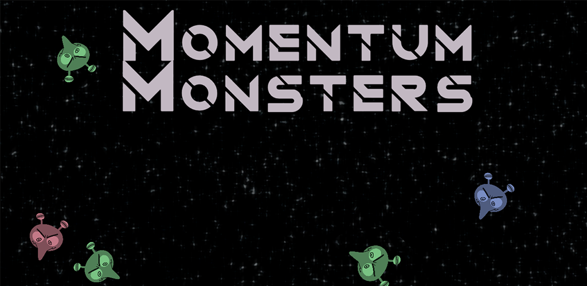
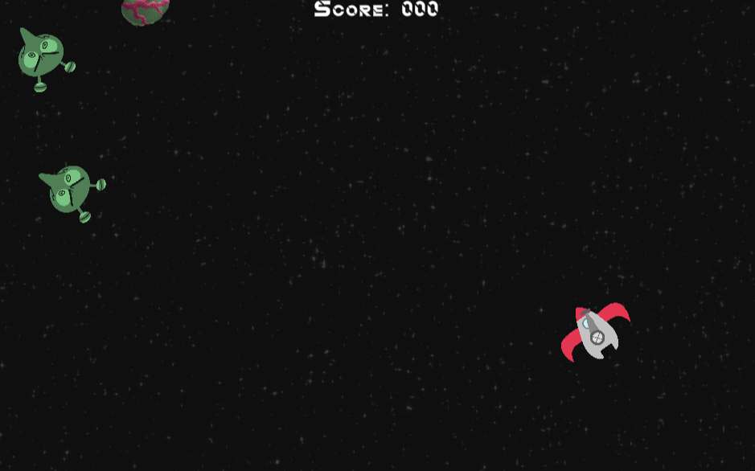

Momentum Monsters
Casual Physics-based Arcade Game

Momentum Monsters takes an easy to understand premise of a survival space game, but with one immediately clear difference that makes it challenge a totally different skill. You can't move unless you fire a bullet in the opposite direction.

Players will need spacial awareness to make sure none of their attacks accidentally push them into an enemy. It ends up being very satisfying to predict the paths of all the enemies and fire a bullet ahead of where they are that also doesn't get you killed.
Momentum Monsters is available on mobile here, and you can also play directly in your browser here.